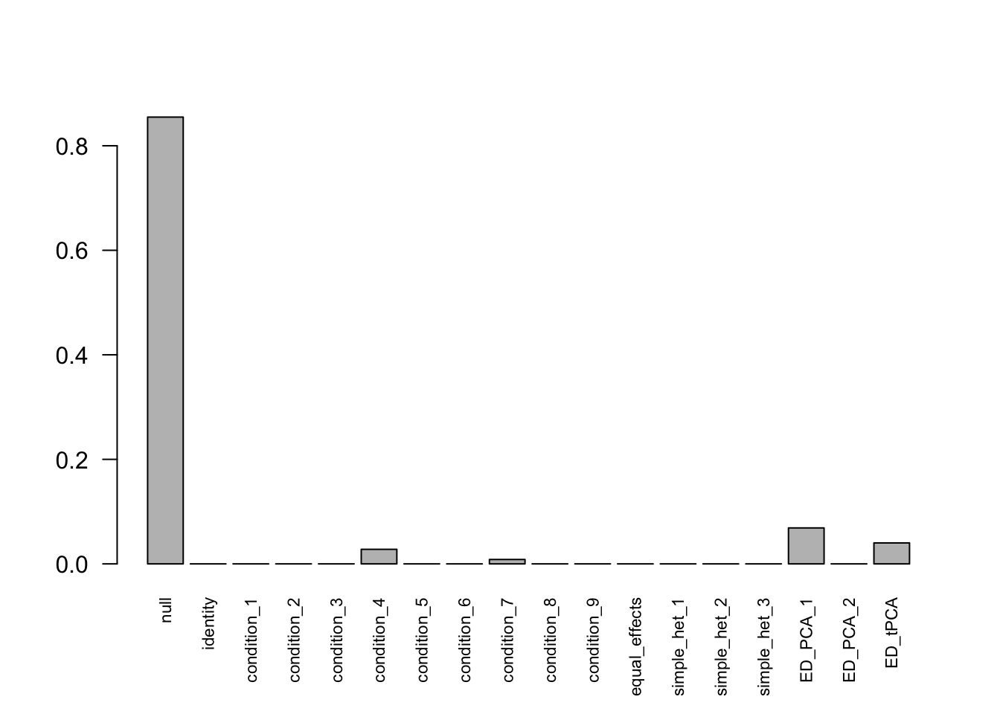
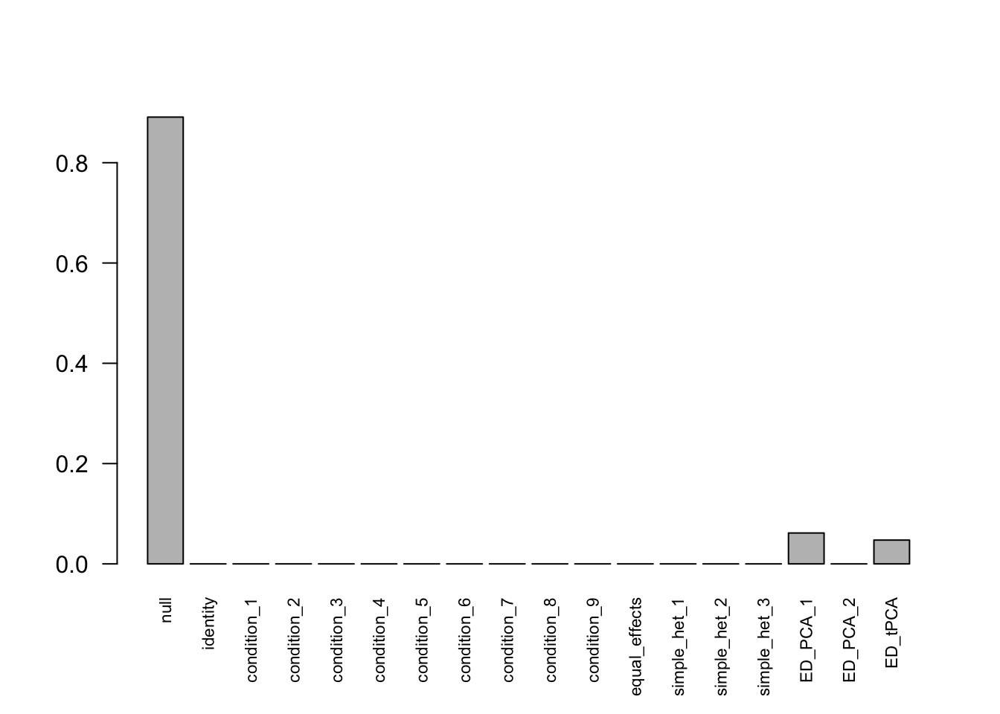
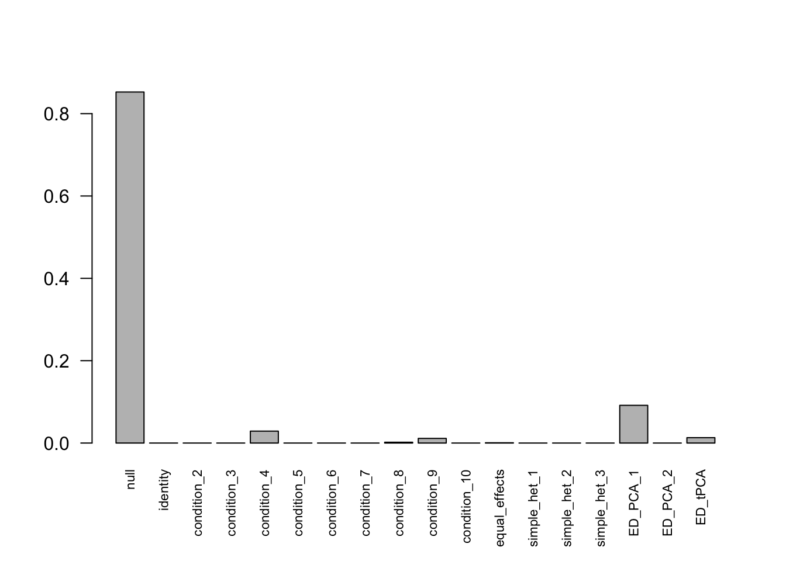
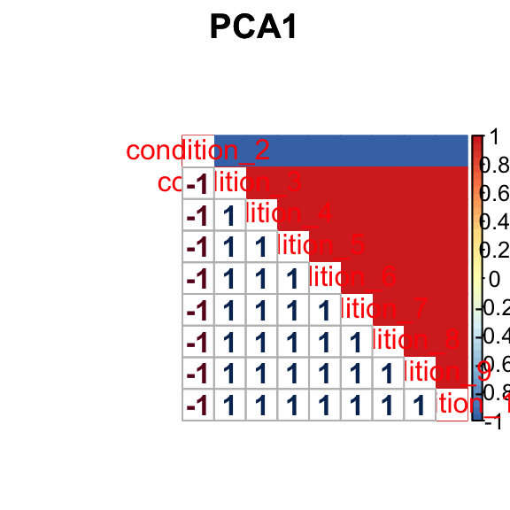
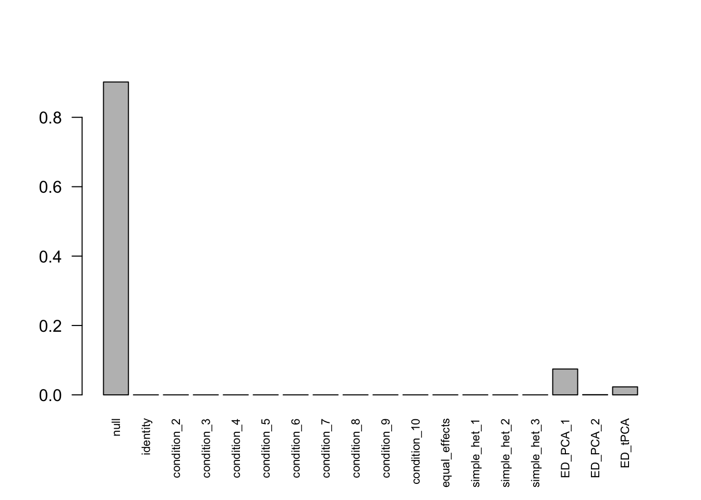
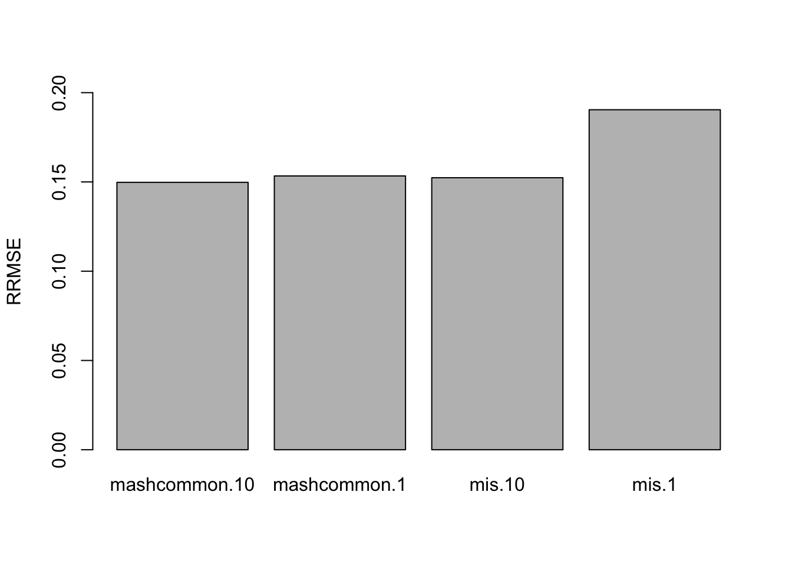
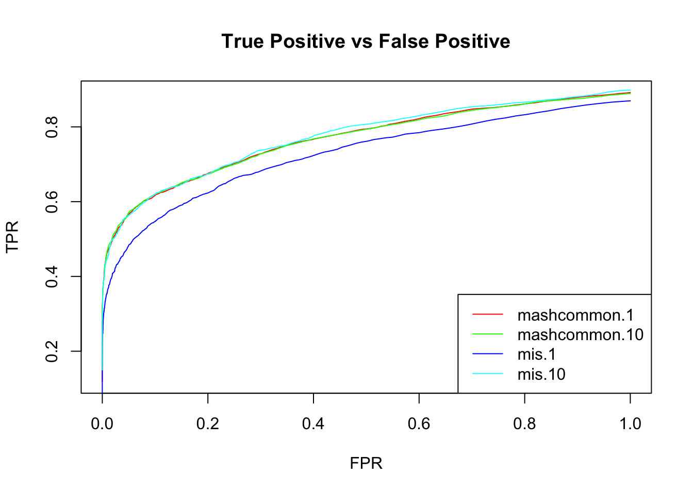

Last updated: 2018-05-16
Code version: fa7349d
Loading required package: ashrcorrplot 0.84 loadedThe data contains 10 conditions with 10% non-null samples. For the non-null samples, it has equal effects in the first c conditions.
Let L be the contrast matrix that subtract mean from each sample.
\[\hat{\delta}_{j}|\delta_{j} \sim N(\delta_{j}, \frac{1}{2}LL')\] 90% of the true deviations are 0. 10% of the deviation \(\delta_{j}\) has correlation that the first c conditions are negatively correlated with the rest conditions.
We set \(c = 2\).
set.seed(1)
R = 10
C = 2
data = sim.mean.sig(nsamp=10000, ncond=C)L = matrix(-1/R, R, R)
L[cbind(1:R,1:R)] = (R-1)/R
row.names(L) = colnames(data$Chat)
L.10 = L[1:(R-1),]
mash_data = mash_set_data(Bhat=data$Chat, Shat=data$Shat)
mash_data_L.10 = mash_set_data_contrast(mash_data, L.10)U.c = cov_canonical(mash_data_L.10)
# data driven
# select max
m.1by1 = mash_1by1(mash_data_L.10)
strong = get_significant_results(m.1by1,0.05)
# center Z
mash_data_L.center = mash_data_L.10
mash_data_L.center$Bhat = mash_data_L.10$Bhat/mash_data_L.10$Shat # obtain z
mash_data_L.center$Shat = matrix(1, nrow(mash_data_L.10$Bhat),ncol(mash_data_L.10$Bhat))
mash_data_L.center$Bhat = apply(mash_data_L.center$Bhat, 2, function(x) x - mean(x))
U.pca = cov_pca(mash_data_L.center,2,strong)
U.ed = cov_ed(mash_data_L.center, U.pca, strong)
mashcontrast.model.10 = mash(mash_data_L.10, c(U.c, U.ed), algorithm.version = 'R', verbose = FALSE)Using mashcommonbaseline, there are 288 discoveries. The covariance structure found here is:
barplot(get_estimated_pi(mashcontrast.model.10),las = 2, cex.names = 0.7)
Recover the last column
mashcontrast.model.10.full = mashcontrast.model.10
mashcontrast.model.10.full$result = mash_compute_posterior_matrices(g = mashcontrast.model.10, data = mash_data_L.10, algorithm.version = 'R', recover=TRUE)There are 289 discoveries.
We try an example with the miscalculated variance of mean. The reason to include this example is that the variance of median is hard to compute (not iid data), if we subtract median from the samples directly. We want to test whether the misspecified variance could influence the result.
The following model is fitted under miscalculation of \(Var(\hat{c}_{j,r}-\bar{\hat{c}_{j}}) = \frac{1}{2}\).
There are 283 discoveries. The covariance structure found here is: 
Recover the last column
Mis.model.10.full = Mis.model.10
Mis.model.10.full$result = mash_compute_posterior_matrices(g = Mis.model.10, data = Mis.data.10, algorithm.version = 'R', recover=TRUE)There are 283 discoveries.
The data was generated with signals in the first c conditions (\(c_{j,1}, \cdots, c_{j,c}\)). The contrast matrix L used here discards the last condition among R conditions. The deviations are \(\hat{c}_{j,1} - \bar{\hat{c}_{j}}, \hat{c}_{j,2} - \bar{\hat{c}_{j}}, \cdots, \hat{c}_{j,R-1} - \bar{\hat{c}_{j}}\).
However, the contrast matrix L can discard any deviation from \(\hat{c}_{j,1} - \bar{\hat{c}_{j}}, \cdots, \hat{c}_{j,R} - \bar{\hat{c}_{j}}\). The choice of the discarded deviation could influence the result.
We run the same model with L that discard the first deviation.
L.1 = L[2:R,]
mash_data_L.1 = mash_set_data_contrast(mash_data, L.1)U.c = cov_canonical(mash_data_L.1)
# data driven
# select max
m.1by1 = mash_1by1(mash_data_L.1)
strong = get_significant_results(m.1by1,0.05)
# center Z
mash_data_L.center = mash_data_L.1
mash_data_L.center$Bhat = mash_data_L.1$Bhat/mash_data_L.1$Shat # obtain z
mash_data_L.center$Shat = matrix(1, nrow(mash_data_L.1$Bhat),ncol(mash_data_L.1$Bhat))
mash_data_L.center$Bhat = apply(mash_data_L.center$Bhat, 2, function(x) x - mean(x))
U.pca = cov_pca(mash_data_L.center,2,strong)
U.ed = cov_ed(mash_data_L.center, U.pca, strong)
mashcontrast.model.1 = mash(mash_data_L.1, c(U.c, U.ed), algorithm.version = 'R', verbose = FALSE)Using mashcommonbaseline model, there are 283 discoveries. The covariance structure found here is:
barplot(get_estimated_pi(mashcontrast.model.1),las = 2, cex.names = 0.7) The correlation PCA 1 is: 
Recover the first column
mashcontrast.model.1.full = mashcontrast.model.1
mashcontrast.model.1.full$result = mash_compute_posterior_matrices(g = mashcontrast.model.1, data = mash_data_L.1, algorithm.version = 'R', recover=TRUE)There are 285 discoveries.
The following model is fitted under miscalculation of \(Var(\hat{c}_{j,r}-\bar{\hat{c}_{j}}) = \frac{1}{2}\).
There are 168 discoveries. The covariance structure found here is: 
Recover the first column
Mis.model.1.full = Mis.model.1
Mis.model.1.full$result = mash_compute_posterior_matrices(g = Mis.model.1, data = Mis.data.1, algorithm.version = 'R', recover=TRUE)There are 283 discoveries.
The RRMSE plot:
delta.10 = data$C - rowMeans(data$C)
deltahat.10 = data$Chat - rowMeans(data$Chat)
delta.1 = delta.10[, c(2:10, 1)]
deltahat.1 = deltahat.10[, c(2:10, 1)]
barplot(c(sqrt(mean((delta.10 - mashcontrast.model.10.full$result$PosteriorMean)^2)/mean((delta.10 - deltahat.10)^2)),
sqrt(mean((delta.1 - mashcontrast.model.1.full$result$PosteriorMean)^2)/mean((delta.1 - deltahat.1)^2)),
sqrt(mean((delta.10 - Mis.model.10.full$result$PosteriorMean)^2)/mean((delta.10 - deltahat.10)^2)),
sqrt(mean((delta.1 - Mis.model.1.full$result$PosteriorMean)^2)/mean((delta.1 - deltahat.1)^2))), ylim=c(0,0.2), names.arg = c('mashcommon.10','mashcommon.1', 'mis.10', 'mis.1'), ylab='RRMSE')
We check the False Positive Rate and True Positive Rate. \[FPR = \frac{|N\cap S|}{|N|} \quad TPR = \frac{|CS\cap S|}{|T|} \]
sign.test.mash.10 = as.matrix(delta.10)*mashcontrast.model.10.full$result$PosteriorMean
sign.test.Mis.10 = as.matrix(delta.10)*Mis.model.10.full$result$PosteriorMean
sign.test.mash.1 = as.matrix(delta.1)*mashcontrast.model.1.full$result$PosteriorMean
sign.test.Mis.1 = as.matrix(delta.1)*Mis.model.1.full$result$PosteriorMean
thresh.seq = seq(0, 1, by=0.0005)[-1]
mashcontrast.1 = matrix(0,length(thresh.seq), 2)
Mis.1 = matrix(0,length(thresh.seq), 2)
mashcontrast.10 = matrix(0,length(thresh.seq), 2)
Mis.10 = matrix(0,length(thresh.seq), 2)
colnames(mashcontrast.1) = colnames(Mis.10) = colnames(Mis.1) = c('TPR', 'FPR')
colnames(mashcontrast.10) = c('TPR', 'FPR')
for(t in 1:length(thresh.seq)){
mashcontrast.1[t,] = c(sum(sign.test.mash.1>0 & mashcontrast.model.1.full$result$lfsr <= thresh.seq[t])/sum(delta.1!=0), sum(delta.1==0 & mashcontrast.model.1.full$result$lfsr <=thresh.seq[t])/sum(delta.1==0))
Mis.1[t,] = c(sum(sign.test.Mis.1>0 & Mis.model.1.full$result$lfsr <= thresh.seq[t])/sum(delta.1!=0), sum(delta.1==0 & Mis.model.1.full$result$lfsr <=thresh.seq[t])/sum(delta.1==0))
mashcontrast.10[t,] = c(sum(sign.test.mash.10>0 & mashcontrast.model.10.full$result$lfsr <= thresh.seq[t])/sum(delta.10!=0), sum(delta.10==0 & mashcontrast.model.10.full$result$lfsr <=thresh.seq[t])/sum(delta.10==0))
Mis.10[t,] = c(sum(sign.test.Mis.10>0& Mis.model.10.full$result$lfsr <=thresh.seq[t])/sum(delta.10!=0), sum(delta.10==0& Mis.model.10.full$result$lfsr <=thresh.seq[t])/sum(delta.10==0))
}
This R Markdown site was created with workflowr